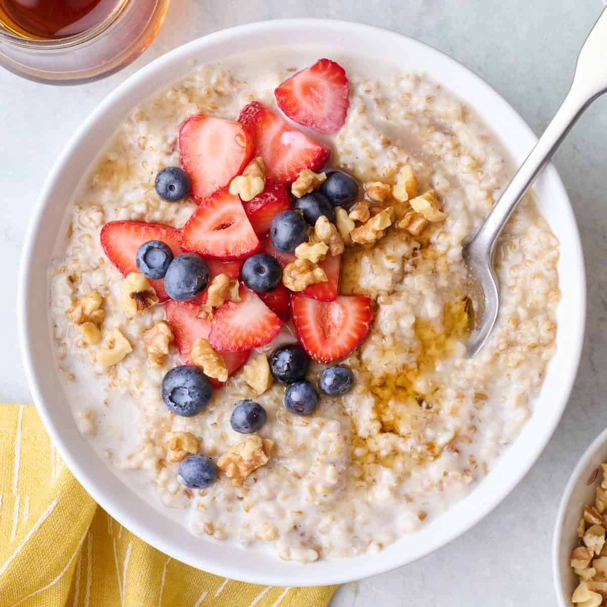

Tentang Kami
Berawal dari Keresahan Anak Muda yang Sering Skip Sarapan...
Pernah nggak sih, kamu melewatkan sarapan karena buru-buru mau ngantor, kuliah, atau ngejar deadline? Atau pengen hidup sehat, tapi rasanya makanan sehat itu selalu ribet disiapin dan rasanya hambar?
Kami, para pendiri OatMe, juga merasakan hal yang sama. Di tengah ritme hidup urban yang serba cepat, menjaga pola makan seringkali jadi hal terakhir yang sanggup kita urus. Padahal, tubuh kita butuh bahan bakar terbaik untuk melewati hari yang panjang.
Dari situlah OatMe lahir. kami ingin mengubah stigma bahwa makanan sehat itu membosankan dan susah dibuat.

Mengapa Memilih Kami?
- Tanpa bahan pengawet dan pewarna buatan
- Bersertifikat organik
- Diimport langsung dari Negara penghasil gandum terbesar
Cara Pemesanan
- Pilih produk dan jumlah
- Hubungi kami melalui WhatsApp
- Lakukan pembayaran, pesanan dikirim
Produk dan Harga
| Produk | Ukuran | Harga |
|---|---|---|
| OatMe Original | 250 g | Rp25.000 |
| OatMe Original | 500 g | Rp50.000 |
| OatMe Berry Bliss | 250 g | Rp30.000 |
| OatMe Berry Bliss | 500 g | Rp60.000 |
| OatMe Tropical Sunrise | 250 g | Rp30.000 |
| OatMe Tropical Sunrise | 500 g | Rp60.000 |
| OatMe Apple Orchard | 250 g | Rp30.000 |
| OatMe Apple Orchard | 500 g | Rp60.000 |

Hubungi Kami
Jln. Raya Garuda raja 011 blok. A, Banyumas, Jawa Tengah